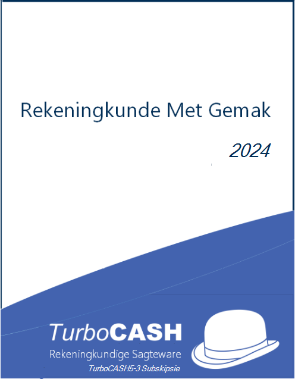

Modernizing osFinancials/TurboCASH Accounting Made Easy Tutorials
Modernizing osFinancials/TurboCASH Accounting Made Easy Tutorials

Modernizing Accounting Made Easy Tutorials Resources
- Multimedia Resources: Detailed discussions on the "Translations and Localization" are available:
- 🎥 Video: 2026 Roadmap Modernizing 'ACCOUNTING MADE EASY' Tutorials osFinancials/TurboCASH -
- 🎵 Audio: 2026 Roadmap Modernizing 'ACCOUNTING MADE EASY' Tutorials osFinancials/TurboCASH - Audio -
- Resources on GitHub: https://github.com/Digidanosf/osfinancials-development/tree/main/accounting-other-languages/tutorials-modernising -
Legacy Tutorials (2024)
Hands-on Tutorials - Bin Tutorials directory
Location on GitHub : https://github.com/Digidanosf/osfinancials-development/tree/main/documentation -
osFinancials5 installation provides tutorial Sets of Books in both English and Afrikaans. These tutorial books allow users to explore different settings, transactions, and reports within the software. Here are the available tutorial sets:
|
Accounting Made Easy English tutorials (using separate receipt and payments journals for banking / cash transactions) |
Accounting Made Easy - Bank Import English tutorials (using the BankImport plugin for banking / cash transactions) |
Rekeningkunde Met Gemak (Afrikaans) Afrikaanse handleidings (gebruik aparte ontvangste- en betalingsjoernale vir bank- / kontanttransaksies) |
|
|
 |
|
|
The following Set of Books based on this tutorial:
|
The following Set of Books based on this tutorial:
|
Die volgende Stel Boeke gebaseer op die Afrikaanse handleidings:
|

2024 Versions in LibreOffice (*.odt) format of these publications can be downloaded in English and Afrikaans
Location on GitHub : https://github.com/Digidanosf/osfinancials-development/tree/main/firebird-databases/TUTORIALS-AME -
Sets of Books and Supporting files for Tutorials
Firebird database type Sets of Books (in English and Afrikaans), including supporting files for export and import, for these tutorials can be downloaded.
Location on GitHub : https://github.com/Digidanosf/osfinancials-development/tree/main/firebird-databases/TUTORIALS -